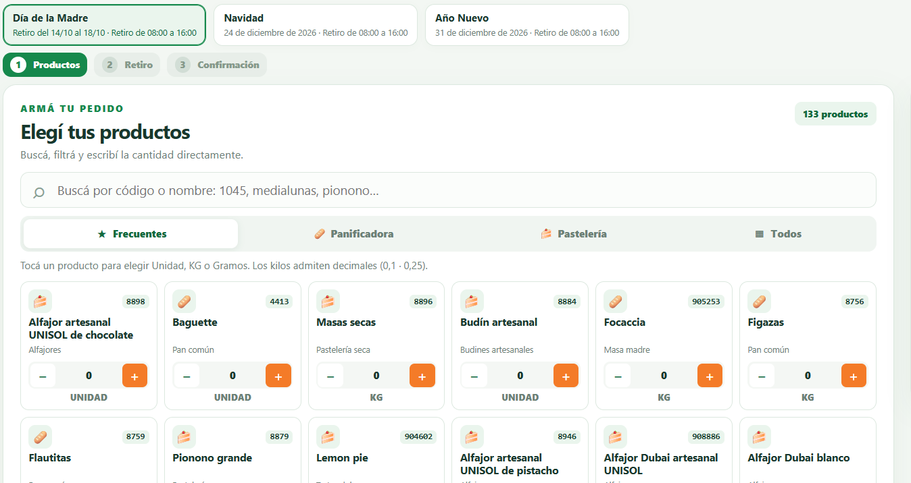
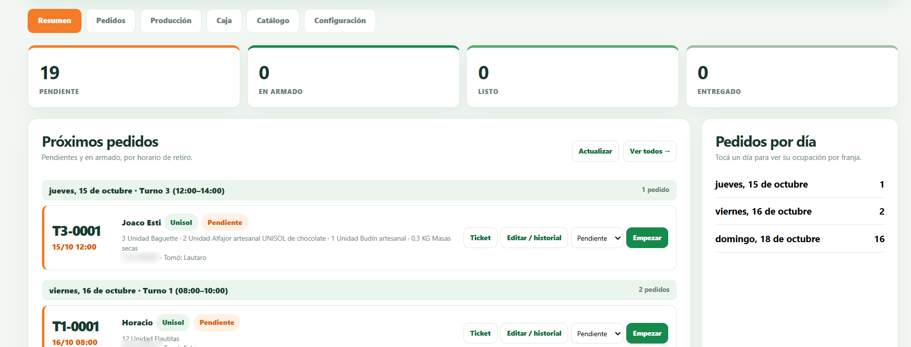
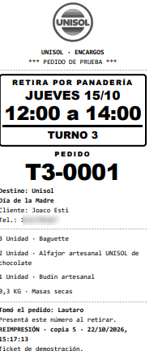

UNISOL Encargos
Plataforma de pedidos anticipados para fechas especiales: del pedido del cliente a la producción y la entrega, en un solo sistema.
El problema. Día de la Madre, Navidad y Año Nuevo concentran cientos de pedidos en pocos días. Se tomaban en papel y planillas: sin control de cupo por horario, producción sumada a mano y retiros desordenados en el mostrador.
-
01
Toma del pedido
Flujo en tres pasos (productos, retiro, confirmación), búsqueda por código, unidades o kilos con decimales y turno con cupo. Si se corta internet, reintenta sin duplicar el pedido.
-
02
Producción
Hojas por sector (Panificadora, Pastelería) con totales por turno y canal, listas para imprimir en comandera.
-
03
Caja y entrega
Ticket con número de turno (T3‑0001) y estados Pendiente → En armado → Listo → Entregado. Caja encuentra cada pedido por su número.
Por detrás: usuarios por rol (caja, producción, toma de pedidos) con historial a nombre de cada uno, entornos de prueba y producción separados, respaldo automático cada 4 horas y pruebas automatizadas antes de cada publicación.


